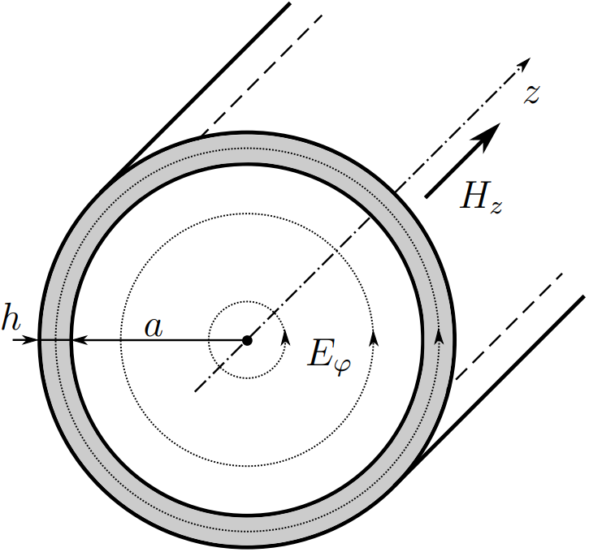
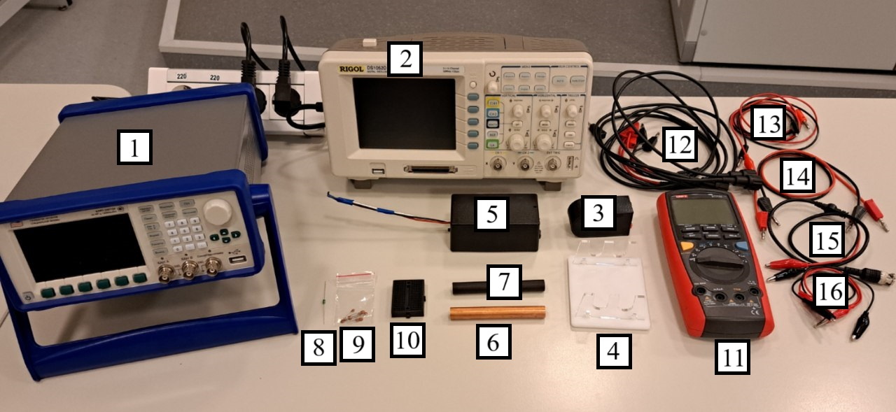
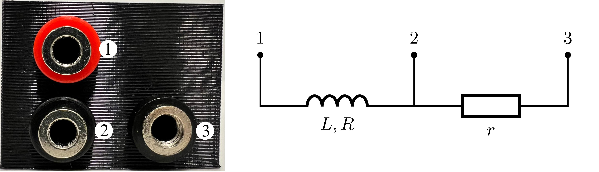
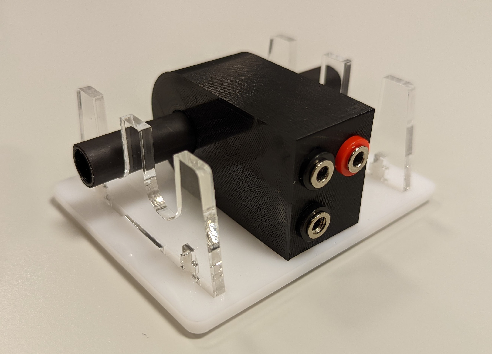
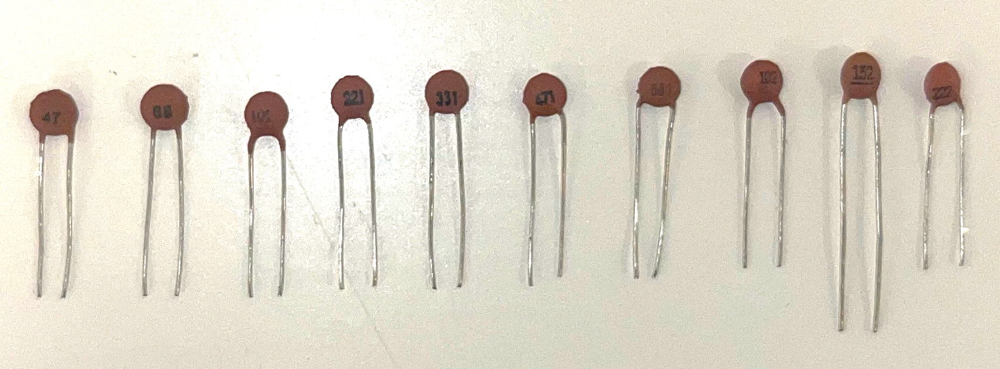
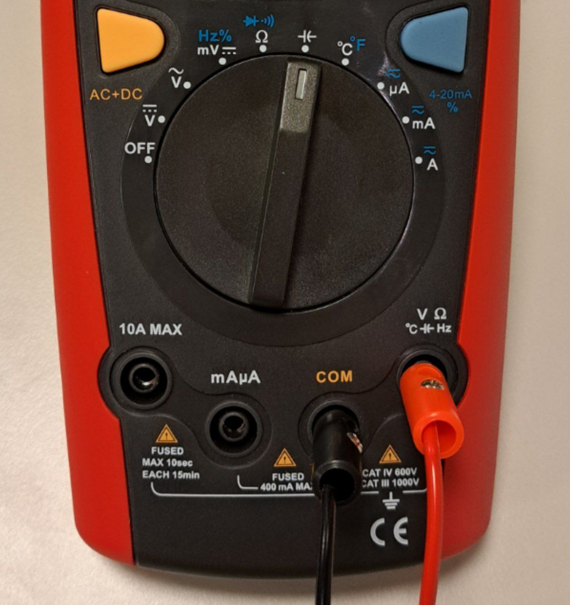
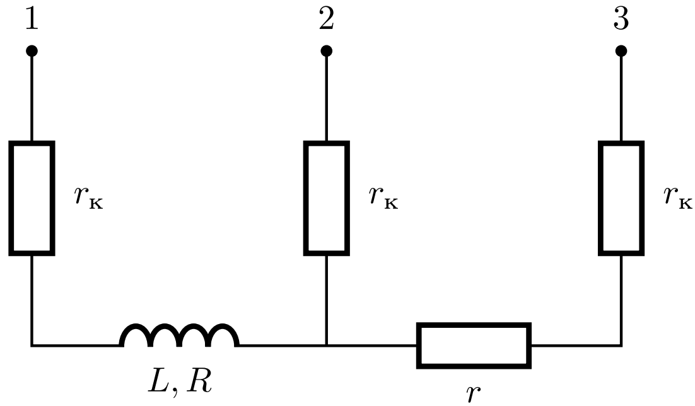

Y24 (2024) — English translation
Skin effect is the effect of reducing the amplitude of high-frequency electromagnetic waves as they penetrate deep into a conducting medium. Thanks to it, high-frequency alternating current flows predominantly along the surface of the conductor. The skin effect leads to shielding of the field and current if the thickness of the conductor turns out to be noticeably greater than the characteristic thickness at which the skin effect manifests itself (in other words, the thickness of the skin layer). This can be useful: for example, the Tesla ball does not shock when touched because the high-frequency current flows only through a thin layer of skin near the surface.
In electrical engineering, the skin effect, on the contrary, appears to be an obstacle, since at high frequencies it significantly increases the contact resistance. This problem is devoted to the study of the skin effect in metals.
As is known, a changing electromagnetic field is described by Maxwell's system of equations. If an alternating voltage is applied to a conductor, an alternating current appears in it, which leads to the appearance of an alternating magnetic field. Let us consider a conductor in the shape of a hollow thin-walled cylinder with an internal radius $a$ and a wall thickness $h$. Let a harmonically time-dependent ring current flow through the cylinder with a circular frequency $\omega$ (in other words, at each point of the cylinder the current density is perpendicular to the radius drawn to this point). In this case, in a steady state, the electric and magnetic field strengths also depend harmoniously on time.
As is known, a changing electromagnetic field is described by Maxwell's system of equations. If an alternating voltage is applied to a conductor, an alternating current appears in it, which leads to the appearance of an alternating magnetic field. Let us consider a conductor in the shape of a hollow thin-walled cylinder with an internal radius $a$ and a wall thickness $h$. Let a harmonically time-dependent ring current flow through the cylinder with a circular frequency $\omega$ (in other words, at each point of the cylinder the current density is perpendicular to the radius drawn to this point). In this case, in a steady state, the electric and magnetic field strengths also depend harmoniously on time.

Let us consider the magnetic field strength component $\vec{H}$ directed along the cylinder axis. Let its complex amplitude near the conductor on its outer side be $H_0$, and on the inner side – $H_1$. Then solving Maxwell's equations for this system gives the following connection between them: \[H_1=\frac{H_{0}}{\operatorname{ch}(\alpha h)+\frac{1}{2}\alpha a\operatorname{sh}(\alpha h)},\] where $\alpha = \cfrac{1+i}{\delta}$, $\delta = \sqrt{\cfrac{2}{\omega \sigma \mu \mu_0}}$, $\sigma$ is the conductivity of the conductor material, $\mu$ – its magnetic permeability. The quantity $\delta$ is called the skin depth, since when the field penetrates deep into the conductor, it noticeably attenuates already at distances from the edge of the order of $\delta$. The materials used in this task have $\mu \approx 1$, so you can then use a simplified formula for the penetration depth: $$\delta = \sqrt{\cfrac{2}{\omega \sigma \mu_0}}.$$
Материалы, используемые в данной задаче имеют $\mu \approx 1$, поэтому далее можно использовать упрощённую формулу для глубины проникновения:
$$\delta = \sqrt{\cfrac{2}{\omega \sigma \mu_0}}.$$

Generator. Oscilloscope. A coil for creating a magnetic field in samples (inside the coil $+$ there is a resistor with resistance $r\sim1~Ом$). Rack. Hall sensor. A piece of copper pipe. Tube parameters: length $l=10~см$, diameter $2a=12.7~мм$, thickness $h=0.65~мм$. "Black box". Parameters: length $l'=10~см$, diameter $2a'=12~мм$. Inductance coil $10~мкГн$. A set of capacitors with capacities $47, 68, 100, 220, 330, 470, 680, 1000,1500,2200~пФ$. Development board. Multimeter. Connecting wires: BNC-banana $\times3$; banana-crocodile $\times 2$; banana–banana $\times 2$; BNC–crocodile; crocodile–crocodile $\times 2$. Personal jumper set (not shown in photo).
Coil for creating a magnetic field in samples: internal structure.

Correct placement of the sample and coil on the stand.


Measuring capacitance using a multimeter.

The stand is designed to center the sample relative to the axis of the coil. The height of the slots differs by $\sim0.5~мм$ because the sample diameters are slightly different. The stands are very fragile, be careful when handling them! Many of the effects studied in the problem are quite subtle. Use the supplied multimeter only for measuring resistances and capacitances! When using an oscilloscope for measurements, it is recommended to use cursors. Oscilloscope readings may be noisy, it is recommended to use averaging over $\ge16$ measurements. Pay attention to the trigger settings! In the averaging mode, situations are possible when the lost setting is invisible! The battery in the Hall sensor runs out pretty quickly! Turn it off unless you are taking measurements!
One of the possible ways to study the skin effect in a tube is to measure the ratio of the maximum magnetic fields in the coil when there is no tube in it and when there is one.
If the thickness of the skin layer is noticeably greater than the thickness of the tube wall, the formula for the ratio of complex amplitudes is noticeably simplified, which makes it possible to find the conductivity of the material under study.
Note: Drawings, diagrams and formulas are accepted as answers.
The main problem with field ratio measurement is the high sensitivity of the actual field distribution and Hall sensor readings to its position in the coil. Measuring the phase difference between the current in the coil and the field inside the tube does not have these disadvantages. Part B of this problem will be devoted to determining the parameters of the material under study based on the behavior of the field phase.
Measuring the phase difference between the current in the coil and the field inside the tube does not have these disadvantages.
Part B of this problem will be devoted to determining the parameters of the material under study based on the behavior of the field phase.
Note: Drawings, diagrams and formulas are accepted as answers.
Since the field inside the tube is weakened by the skin effect, the total flux through the coil in the presence of the tube will be less than in its absence. Thus, the inductance of the coil with the tube inside will decrease with frequency due to the skin effect. Theoretically, it is easy to show that the inductance $L$ is related to the frequency $f$ by the formula:\[\frac{L_{\max}-L}{L-L_{\min}}=[\pi ah\mu_0\sigma f]^2,\]$L_{\max}$ – the highest inductance of the coil (achieved at $f\to0$), and $L_{\min}$ is the lowest coil inductance (achieved at $f\to\infty$). Attention! You can skip points C1 and C2 or not take them into account in further work, but this may reduce the accuracy of your results. The resistance of the resistor is very small, but it may differ slightly from the table, so to successfully solve this part of the problem you need to measure this resistance as accurately as possible.
Attention! You can skip points C1 and C2 or not take them into account in further work, but this may reduce the accuracy of your results.
The resistance of the resistor is very small, but it may differ slightly from the table, so to successfully solve this part of the problem you need to measure this resistance as accurately as possible.
Most likely you received $r_{12}+r_{23} > r_{13}$. The reason for this behavior is contact resistance. For simplicity, we will assume that the resistance of all contacts is the same and equal to $r_к$ [see. rice.]. The internal structure of the coil taking into account the contact resistance.
Most likely you received $r_{12}+r_{23} > r_{13}$. The reason for this behavior is contact resistance. For simplicity, we will assume that the resistance of all contacts is the same and equal to $r_к$ [see. rice.].

Note: Drawings, diagrams and formulas are accepted as answers.
Finally, the skin effect can be examined by its effect on the resistance of the sample. If the oscillation frequency is so high that the thickness of the skin layer turns out to be noticeably less than the thickness of the sample, the current will flow only in a narrow region of thickness $\delta$ near the surface, and the resistance of the sample is expressed as:\[R=\frac1\sigma\frac{l}{P\delta},\]where $P$ is the perimeter of the sample, $l$ is its length, and $\sigma$ is conductivity. In this part, we will try to measure the resistance of samples taking into account the skin effect. Since actually measurable resistance appears in a sample only at fairly high frequencies, it is not possible to measure it directly. A possible solution is to use an oscillating circuit consisting of a $10~мкГн$ coil, one of the capacitors and a sample as a resistor. Resistance can be measured by its quality factor. But even this method is not without problems, in particular: The generator has its own resistance (much greater than the measured resistance) - it cannot be connected in series to the circuit! The oscilloscope has its own capacitance (comparable to the capacitances of the capacitors used). It must be taken into account where it can affect the impedance in the limit of high quality factor.
Finally, the skin effect can be examined by its effect on the resistance of the sample. If the oscillation frequency is so high that the thickness of the skin layer turns out to be noticeably less than the thickness of the sample, the current will flow only in a narrow region of thickness $\delta$ near the surface, and the resistance of the sample is expressed as:\[R=\frac1\sigma\frac{l}{P\delta},\]where $P$ is the perimeter of the sample, $l$ is its length, and $\sigma$ is conductivity.
In this part, we will try to measure the resistance of samples taking into account the skin effect. Since actually measurable resistance appears in a sample only at fairly high frequencies, it is not possible to measure it directly. A possible solution is to use an oscillating circuit consisting of a coil $10~мкГн$, one of the capacitors and a sample as a resistor. Resistance can be measured by its quality factor.
But even this method is not without problems, in particular:
Note: Since resistance depends on frequency, measuring the width of the resonant peak can be difficult in general.
Note: Drawings, diagrams and formulas are accepted as answers.
If the experiment is set up correctly in this part, the linearized dependence actually turns out to be linear, but the value of $\sigma$ turns out to be noticeably less than the results of the previous parts.
Just like 2T spinning magnets, skin effect can be used to non-contactly determine conductive material parameters such as conductivity and thickness. As a black box, you are provided with a colored, heat-shrinkable tube. This part of the problem is devoted to determining the conductivity of the material and the thickness of the tube walls.
This part of the problem is devoted to determining the conductivity of the material and the thickness of the tube walls.
Which method do you think is more accurate?
The table below provides a list of materials from which the tube can be made:
Material Silver Aluminum Tungsten Zinc Nickel $\sigma,~10^7~См$ $6.30$ $3.50$ $1.79$ $1.69$ $1.43$
Source: https://pho.rs/p/3607